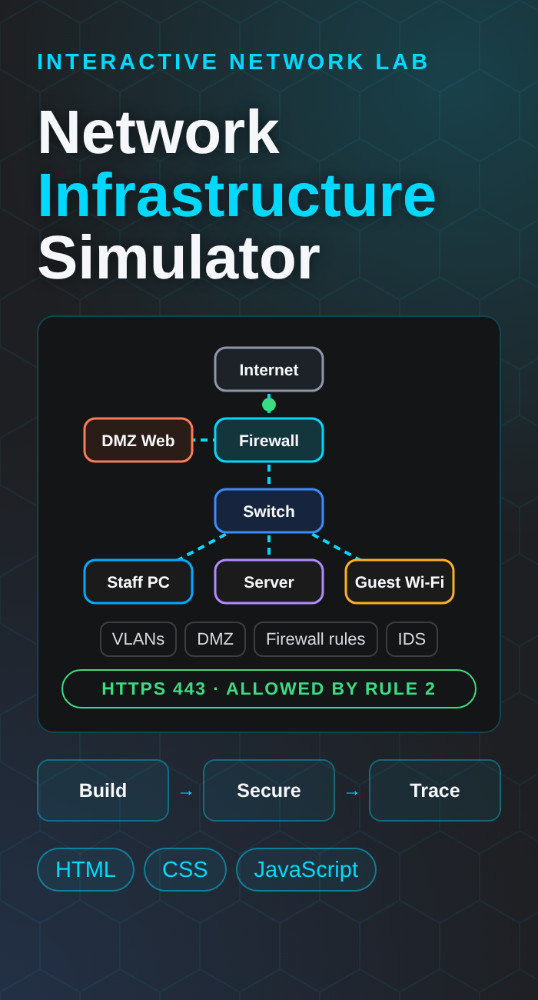

Networking Projects


Network Infrastructure Simulator
Case Study
Overview / What I Built
I built this to show how networks fit together and how security decisions shape where traffic can go. You drag devices onto a canvas, connect them, put them in zones, write firewall rules, and then send traffic to see what gets through and why.
- 10 devices: Internet, router, firewall, switch, access point, server, web server, workstation, laptop, and an IDS sensor
- An info panel for each device with what it does, its OSI layer, common ports, and security tips
- Zones for Staff, Guest, and Servers VLANs plus a DMZ, each with its own addresses
- Firewall rules that run top to bottom with a default deny at the end
- Animated packets with a trace that explains each hop and which OSI layers each device uses
- An IDS sensor that raises alerts for the SOC, which ties into my SOC Alert Triage game
- 5 challenges: a small office, a firewall, a DMZ, a guest VLAN, and network monitoring
Try It Live
This runs in your browser, so there is nothing to install.
Start with the example network and use the quick tests on the Traffic tab to see what the firewall allows and blocks. Then open the Challenges tab and build your own.
Open the Live DemoBuild Notes and Links
What I remember about building it
The first version was one of my first projects, so most of my time went into errors and broken code. I kept getting the syntax wrong and putting strings in the wrong place, and I had to fix it one error at a time until it worked. It had a command line on each device but no clear goal for visitors.
For version 2, I rebuilt it with help from AI tools around the plan I had from the start: more devices, info panels, firewall rules, zones, packet flow, and challenges. I focused on the networking and security content, like what each device does and which rules a DMZ and a guest VLAN need.